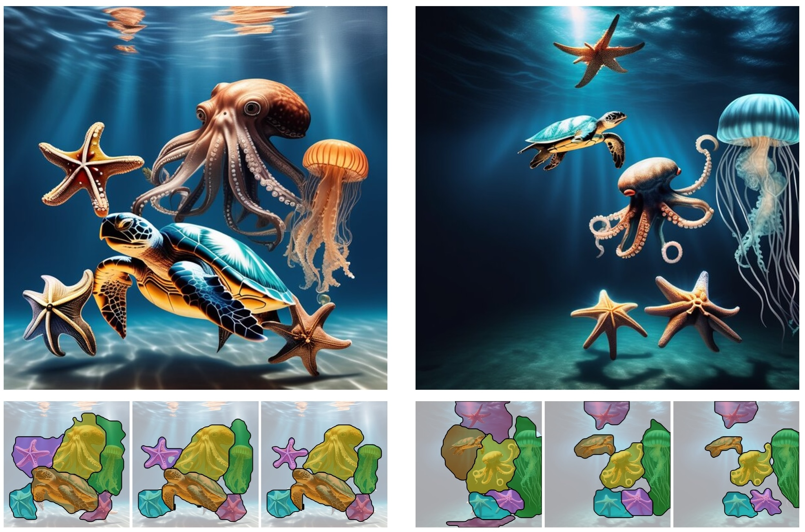
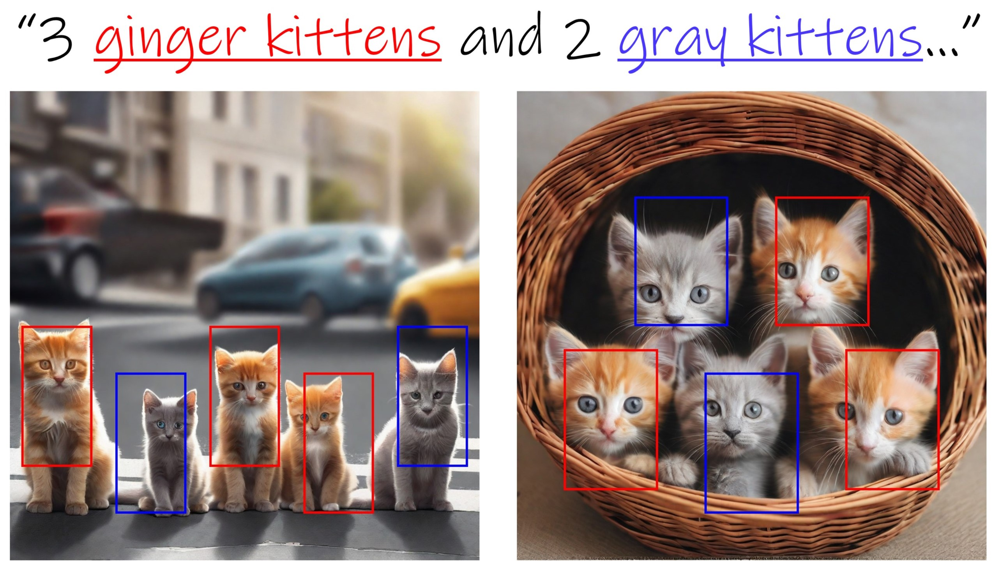

Omer Dahary
I am a Computer Science PhD student at Tel-Aviv University, under the supervision of Daniel Cohen-Or, and an intern at Snap Research.
My work focuses on advancing generative models, with a particular emphasis on improving their ability to align with user control.
Before my PhD, I earned two bachelor's degrees in Mathematics and Computer Science from the Technion, as part of the Technion Program for Excellence. I later completed my MSc under the supervision of Alex Bronstein, where I focused on computational photography.
Publications
2025
-

Be Decisive: Noise-Induced Layouts for Multi-Subject Generation SIGGRAPH, 2025 https://arxiv.org/abs/2505.21488 https://omer11a.github.io/be-decisive/
2024
-

Be Yourself: Bounded Attention for Text-to-Image Multi-Subject Generation ECCV, 2024 https://arxiv.org/abs/2403.16990 https://omer11a.github.io/bounded-attention/
2021
-
 Digital Gimbal: End-to-end Deep Image Stabilization with Learnable Exposure Times CVPR, 2021 https://arxiv.org/pdf/2012.04515 https://sites.google.com/view/digital-gimbal
Digital Gimbal: End-to-end Deep Image Stabilization with Learnable Exposure Times CVPR, 2021 https://arxiv.org/pdf/2012.04515 https://sites.google.com/view/digital-gimbal